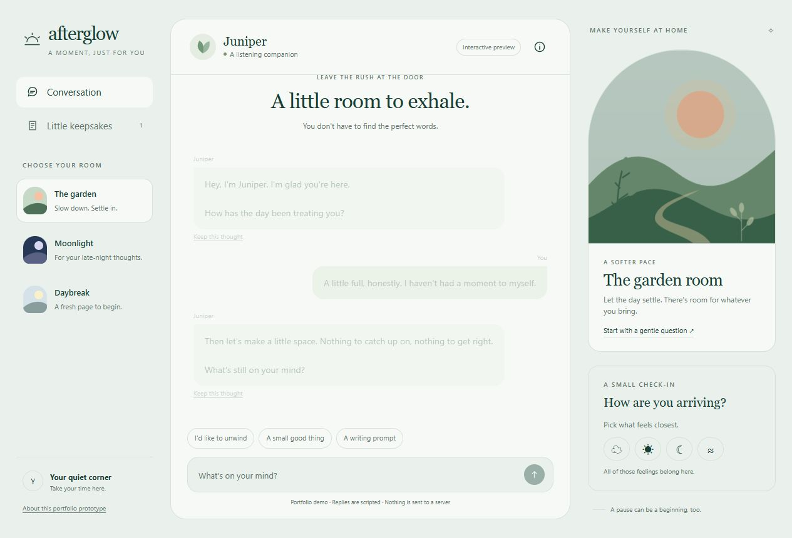
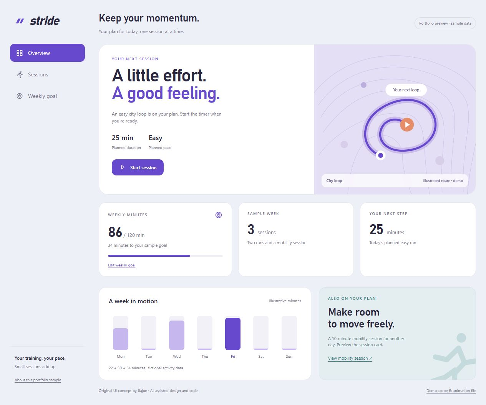
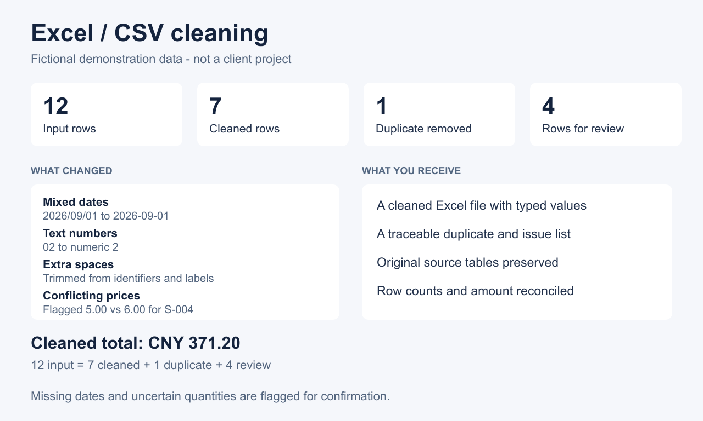

Open the demo.
Explore the details.
Interactive pages and inspectable files. These samples show what the interface does, how it fits a phone, and what is included in the handoff.Original demos, created with AI-assisted design and development.
Afterglow
A calm chat interface with three visual themes, saved snippets and a compact mobile navigation.
- Switch themes and send a message
- Save a snippet and return to it
- Inspect desktop and mobile layouts
Scripted replies for demonstration. No live AI service or customer data is connected.

Stride
A fitness session interface with a timer, weekly goals and a short vector animation when a session ends.
- Start, pause and complete a session
- Adjust a goal and see the progress
- View the original Lottie animation
Fictional session data; records last for this visit. The Lottie player needs an internet connection. No GPS or activity tracking is connected.

A traceable cleanup
A small workbook showing source rows, cleaned results and exceptions that need a decision.
- 12 source rows: 7 clean, 1 duplicate, 4 for review
- Missing or conflicting values stay visible
- Cleaned amount total: CNY 371.20
All records are fictional demonstration data. This is a sample workflow, not a client case or income record.

Have a small task in mind?
Send the screen or workflow you want to improve, your preferred output format and the acceptance criteria. Scope and price are agreed before work starts.
也可中文沟通。请先发送需求概述或脱敏样例。